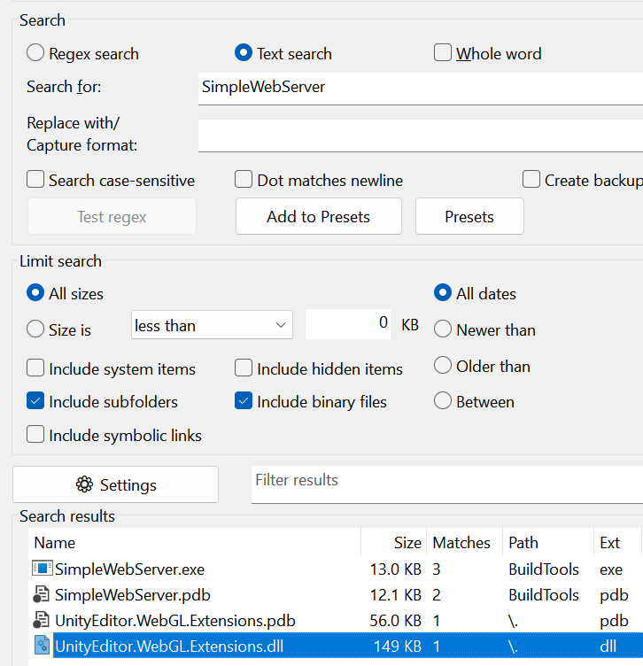
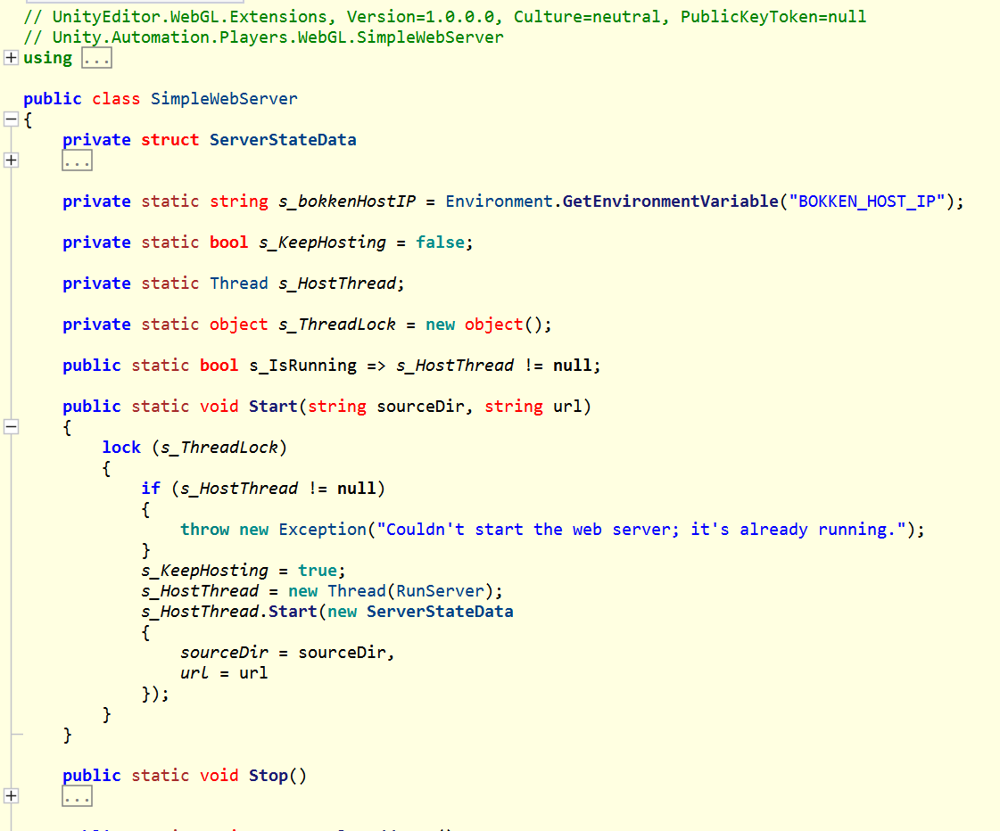
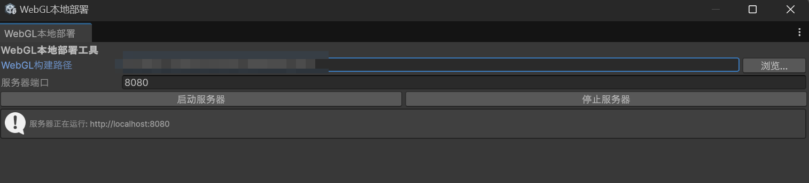

背景
Unity可以进行Web平台的打包，但是打出来的包（入口为index.html）通常无法直接在浏览器中运行，必须使用本地服务器进行反向代理才能正常运行。
正常来说，我们可以使用nginx等工具进行手动的反向代理操作，从而在本地运行打出来的Web包。
只是这种方案费时费力——而Unity本身提供了Build And Run的功能，内置了反向代理，本文将介绍怎样使用Unity自带的反向代理功能，直接运行构建出来的Web包。
SimpleWebServer
在Unity自带的WebGLSupport模块中，有一个SimpleWebServer.exe程序。顾名思义，这就是一个简单的本地网络服务器，这也就是Unity的Build And Run中反向代理所使用到的程序。
我们尝试在GrepWin中搜索SimpleWebServer字段，成功定位到UnityEditor.WebGL.Extensions.dll：

那么，ILspy启动，定位到程序集为Unity.Automation.Players.WebGL：

可以看到，SimpleWebServer提供Start和Stop函数，因此我们只需要写一个界面，控制SimpleWebServer的开始和结束即可。
界面及代码
我实现了一个简单的界面如下：

代码也已提供，直接复制粘贴即可：
1 | using UnityEditor; |